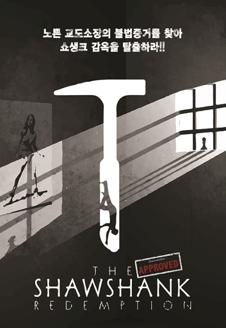

억울한 누명,
교도소장의 비리.
“교도소로 잠입해
이 모든 진실을 밝혀 달라”
쇼생크 감옥을
탈출하라!!
다녀온 사람 후기
“공포는
0
, 대신 꽤 움직여요”
“
편한 옷
입고 가세요”
“후기 5편 중
3편이 탈출 실패
”
네이버 블로그 방탈출 후기 5편에서 간추림
쇼생크
탈출
미스터리룸이스케이프 홍대2호점
난이도 중간 · 활동성 높음 · 공포도 없음 · 2~6명

포스터: 미스터리룸이스케이프 공식
다녀왔다면
후기 남기기
줄거리·후기는 프로필 링크 · talkkaknote.com